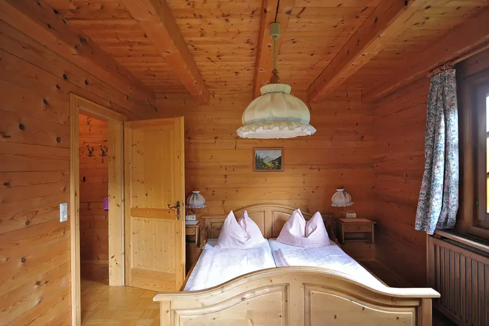

Wohnung fit machen · 5 Min. Lesezeit
Ferienwohnung einrichten: Die Checkliste für gute Bewertungen
Gäste verzeihen eine kleine Wohnung, aber kein schlechtes Bett und kein langsames WLAN. Mit dieser Checkliste ist Ihre Wohnung bereit für die ersten Gäste.

Schlafzimmer einer Ferienwohnung mit Holztäfer und frisch bezogenem Doppelbett.
- Das Bett ist der wichtigste Einzelposten: gute Matratze, zwei Sätze Wäsche pro Bett.
- Die Küche braucht eine vollständige Grundausstattung für die maximale Gästezahl.
- Eine Schlüsselbox macht die Anreise unabhängig von Ihrer Zeit.
- Rauchmelder, Feuerlöscher und Notfallnummern gehören in jede Wohnung.
Schlafen
- Gute Matratzen und Matratzenschoner
- Zwei Sätze Bettwäsche pro Bett, damit immer ein Satz bereit ist
- Zwei Kissen pro Person, eines davon flach
- Vorhänge oder Läden, die das Zimmer abdunkeln
- Nachttisch, Leselampe und eine freie Steckdose neben dem Bett
- Kleiderbügel und Platz für den Koffer
Küche
- Geschirr, Gläser und Besteck für die maximale Gästezahl, plus Reserve
- Pfannen, scharfe Messer, Schneidebrett, Sieb, Dosenöffner, Korkenzieher
- Kaffeemaschine und Wasserkocher
- Grundvorrat: Salz, Pfeffer, Öl, Kaffee, Tee, Zucker
- Abwaschmittel, Schwamm, Geschirrtücher, Abfallsäcke
- Eine kurze Anleitung zur Abfalltrennung, in der Schweiz für viele Gäste neu
Bad
- Pro Person ein grosses und ein kleines Frottiertuch, dazu eine Badematte
- Seife, Duschmittel, WC-Papier in Reserve
- Föhn
- Haken und Ablagen, damit nichts auf dem Boden liegt
Wohnen und Arbeiten
- Schnelles, stabiles WLAN. Name und Passwort gut sichtbar
- Ein Tisch, an dem alle Gäste gleichzeitig essen können
- Genügend Steckdosen und ein Adapter für ausländische Stecker
- Heizung, die Gäste selbst bedienen können, mit kurzer Anleitung
In den Bergen zusätzlich
- Platz für Ski, Schlitten und nasse Schuhe
- Möglichkeit, Kleider zu trocknen
- Wegbeschreibung mit Fotos, besonders in autofreien Orten wie Wengen und Mürren
- Hinweise zu Bahnen, Bus und Einkaufen im Ort
Sicherheit
- Rauchmelder in Schlafzimmern und im Wohnbereich
- Feuerlöscher oder Löschdecke in der Küche
- Kleine Hausapotheke
- Notfallnummern und die genaue Adresse der Wohnung, gut sichtbar
Anreise ohne Schlüsselübergabe
Mit einer Schlüsselbox oder einem elektronischen Schloss reisen Gäste selbständig an, auch spät am Abend. Sie müssen nicht vor Ort sein. Ändern Sie den Code regelmässig und schicken Sie ihn erst kurz vor der Anreise. Den Vergleich und eine Vorlage für die Nachricht finden Sie im Ratgeber Self-Check-in.
Ihre eigenen Sachen
Richten Sie einen abschliessbaren Schrank oder ein Kellerabteil für persönliche Dinge ein. So bleibt die Wohnung für Gäste aufgeräumt, und Sie finden Ihre Sachen wieder, wenn Sie selbst kommen.
Die Gästemappe
Eine Seite pro Thema genügt: WLAN, Heizung, Abfall, Hausordnung, Notfall, Tipps für Restaurants und Ausflüge. Am besten auf Deutsch und Englisch, digital und ausgedruckt.
Zum Start machen wir mit unseren Kunden eine Bestandesaufnahme. Fehlt etwas, erhalten Sie eine Liste und eine Offerte zum Fixpreis. Sie entscheiden, was Sie selbst kaufen.
Häufige Fragen
Wie viel Bettwäsche brauche ich für eine Ferienwohnung?
Mindestens zwei Sätze pro Bett. So liegt nach jeder Abreise ein frischer Satz bereit, während der andere in der Wäsche ist.
Muss eine Ferienwohnung voll möbliert sein?
Ja. Gäste erwarten eine vollständig ausgestattete Wohnung mit Betten, Küche, Geschirr, Wäsche und WLAN. Fehlt etwas Wichtiges, zeigt sich das schnell in den Bewertungen.